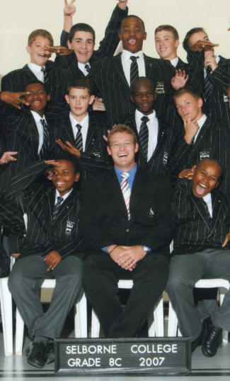

ACADEMIC: [Grade 8] [Grade 9][Grade 10][Grade 11][Grade 12]
SPORT: [Water Polo] [Rugby]
CLUBS / SOCIETIES: [Outdoor Club][Skateboarding]
INTERHOUSE:[Crewe House]
CLASS TEACHER:[Grade 8 C]
CONTACT DETAILS:[Contact Me]
YOUR TEACHER: [Mr Miles]

Allan David Miles
CLASSROOM:
G12
DATE OF BIRTH:
2 February 1981
EDUCATION:
Komga Junior School
Selborne Primary
Selborne College (Matriculated 1999)
Bachelor of Commerce (undergraduate) Fort Hare
SPORT:
Craven Week 1999
Border U19 2000
Border Bulldogs 2005
Old Boys 1st Team
Master in charge of Rugby Master in charge of Outdoor Club
Master in charge of Crewe House Master in charge of Skateboarding Club
Grade 9C Class Teacher Grade 8 Economic Management Sciences
U15A Rugby Coach Grade 9 Economic Management Sciences
U16A Water Polo Coach Grade 10 Accounting
Grade 11 Accounting Hostel Master
I matriculated at Selborne College as the School and Hostel Head Prefect in 1999. I spent my first year out of school in New Zealand on a rugby exchange. Since returning in 2000, I have coached Rugby and Water Polo at Selborne College. I have been appointed as a Teaching Assistant since 2004. I am a part time student at the University of Fort Hare and I am graduating with a Bachelor of Commerce Degree in 2009.
[Home]